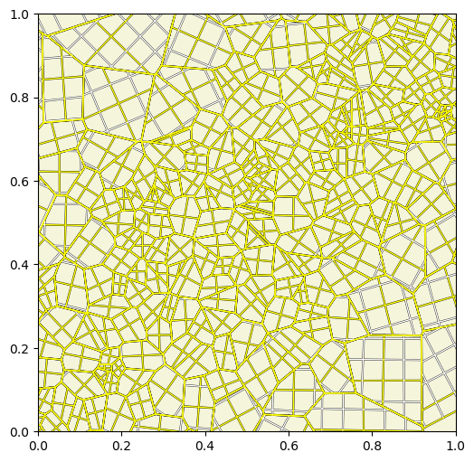
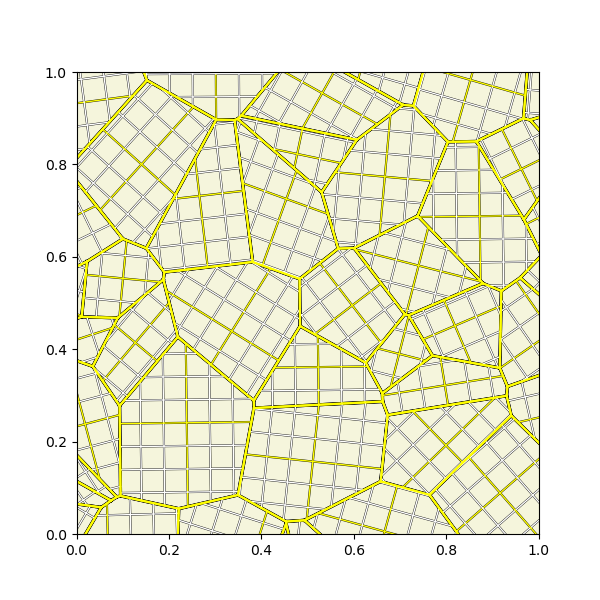
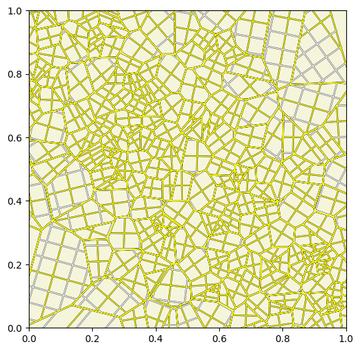

Travaux scientifiques
Recherche
Je suis actuellement doctorant au centre INRIA de Paris-Saclay au sein de l’équipe TRiBE. Mes thèmes de recherche portent sur la géométrie fractale et hyperfractale, ainsi que sur leur utilisation pour modéliser et mieux comprendre l’organisation des milieux urbains.



Trois cartes de villes artificielles générées avec un modèle hyperfractal
-
Asymptotics of Parking Search in Hyperfractal Networks
Geoffrey Deperle, C. Fricker, Philippe Jacquet, A. Rigonat, B. Mans.
37th International Conference on Probabilistic, Combinatorial and Asymptotic Methods for the Analysis of Algorithms (AofA 2026) . [arXiv] -
Generating Random Hyperfractal Cities
Geoffrey Deperle, Philippe Jacquet.
Proceedings of the 7th International Conference on Geometric Science of Information (GSI 2025) , Saint-Malo, France, October 2025, pp. 245–253. [arXiv]
Travail de recherche complémentaire
En parallèle de mes recherches principales, j’ai également contribué au travail collaboratif suivant.
-
The NetMob25 Dataset: A High-resolution Multi-layered
View of Individual Mobility in Greater Paris Region
Alexandre Chasse, Anne J. Kouam, Aline C. Viana, Razvan Stanica, Wellington V. Lobato, Geymerson Ramos, Geoffrey Deperle, Abdelmounaim Bouroudi, Suzanne Bussod, Fernando Molano.
Prépublication, 2025. [arXiv]